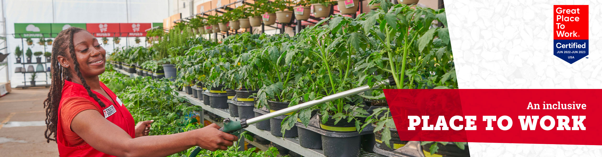
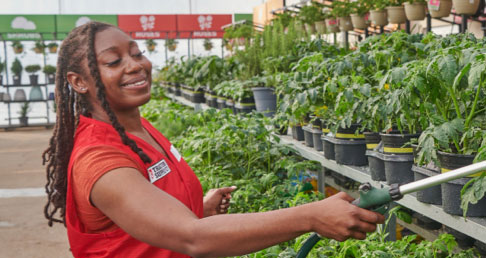
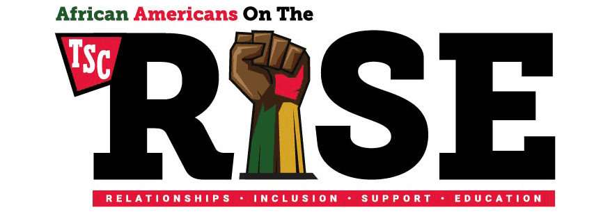
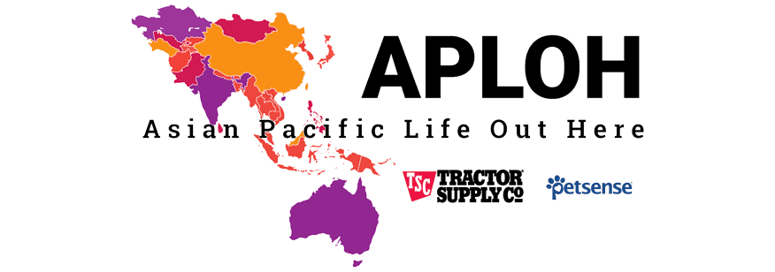
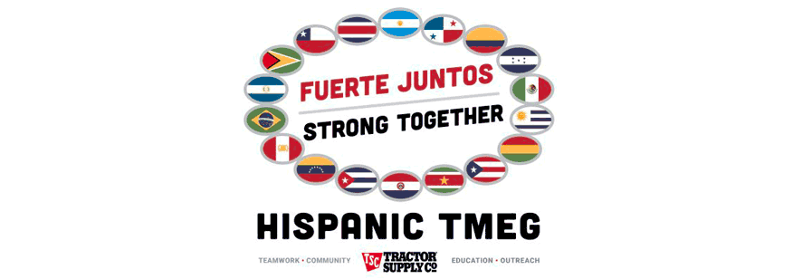
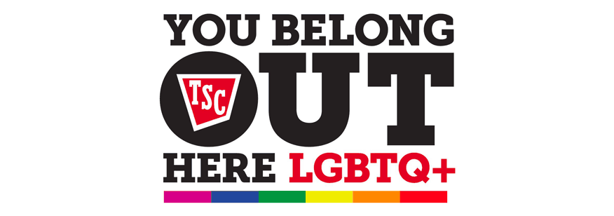
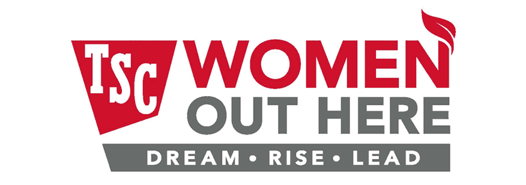
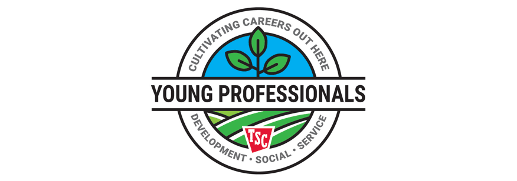

DIVERSITY, EQUITY AND INCLUSION (DE&I)


Tractor Supply is committed to providing a welcoming and inclusive environment for our Team Members, customers, communities, and suppliers. We welcome different perspectives, ideas, and innovative thinking - so much so, that we refreshed our company’s Mission and Values in 2021 to reflect the importance of the communities we serve and our company’s commitment to DE&I.
Our DE&I strategy states that we are committed to providing a diverse, equitable, and inclusive culture supported by our Mission & Values where we respectfully foster different perspectives, ideas and innovative thinking. We know that we are stronger together, and we believe in the authenticity our Team Members bring to work every day. By focusing on our Team Members first, we know that our customers and communities will be well served.
TEAM MEMBER ENGAGEMENT GROUPS
Our Team Member Engagement Groups (TMEGs) are an important way that we provide professional development, connection and camaraderie, especially during COVID. TMEGs are groups of individuals at TSC who share common interests, backgrounds, or characteristics, and want to act as resources for improving the engagement of group members; diversity representation and inclusiveness of TSC; development of group members; and business results through focused attention on aligning group goals with the company’s strategy. TMEGs have sponsored special programming that includes topics like resume writing and internal interviewing; restorative self-care; personal brand; personal finances; maximizing your workplace; and public speaking & presentation skills in a virtual world. Each of our current, active TMEGs each has a specialized focus.





